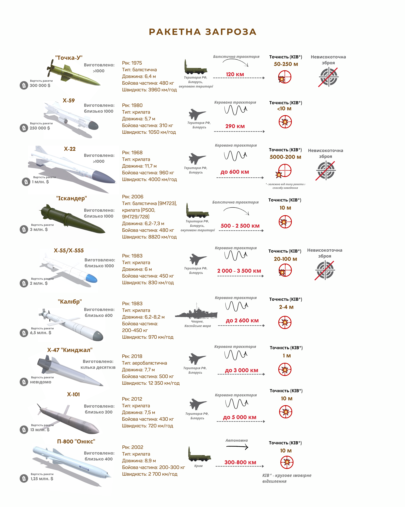

Один вибух на Кримському мосту змінив на фронті значно більше, ніж сотня російських ракет по Україні. Військовий розбір Forbes
Як російські удари по електромережі вплинуть на обороноздатність України? Що змінить призначення Суровікіна – нового командувача на війну в Україну? Скільки ракет Росія вже використала?
Цей тиждень розпочався з найбільш масованого ракетного обстрілу України від 24 лютого. За кілька годин Росія випустила по території України 84 ракети і 24 дрони-камікадзе. Зокрема, використовуючи дорогі й дефіцитні ракети Х-101, вартістю близько $13 млн за одиницю
Путін назвав цей обстріл відповіддю на руйнування Кримського мосту, а західні ЗМІ заговорили про перемогу «партії війни» в Росії та посилення ескалації на фоні призначення нового командувача військ РФ Сергія Суровікіна.
Кримський міст і «рівноцінна» відповідь
Після підриву Кримського мосту абсолютно очевидно, що Путін мав чимось відповісти. Радикалізоване російське суспільство вимагало «рівноцінної» відповіді. Але проблема в тому, що варіантів рівноцінної відповіді в Росії не було.
Після підриву Кримського мосту абсолютно очевидно, що Путін мав чимось відповісти. Радикалізоване російське суспільство вимагало «рівноцінної» відповіді. Але проблема в тому, що варіантів рівноцінної відповіді в Росії не було.
Адже саме ним здійснюється основне забезпечення і перекидання сил у напрямку Херсона й Запоріжжя.
На цьому напрямку фронту перебуває угруповання сил ворога – близько 50 000 солдатів.
Щоб забезпечувати потреби такого війська, необхідно щодня близько 100 тонн їжі й медикаментів, 1000 тонн паливо-мастильних матеріалів і 500–1000 тонн боєприпасів та амуніції.
Якщо додати особовий склад і військову техніку, то зрозуміло, що кожного дня Кримський міст забезпечував доставку на фронт тисяч тонн військових вантажів.
Раптове знищення цього маршруту або навіть обмеження його пропускної здатності може викликати колапс на фронті, якщо угруповання військ достатньо довго залишатиметься без постачання в потрібних обсягах.
Багатомісячне бомбардування цивільних об’єктів демонструє, що Росія не здатна виявити й уразити об’єкт, який мав би аналогічне військове значення для України. Чи бодай просто серйозне військове значення.
Навесні російська пропаганда була окрилена ідеєю залишити Україну і військових без пального. Тоді головний акцент ракетних ударів будувався на знищенні Кременчуцького нафтопереробного заводу, нафтових баз і паливних складів по всій Україні. Україна справді втратила власне виробництво пального, але на боєздатність війська це ніяк не вплинуло.
Потім у Росії почали обговорювати ідею знищення залізничного сполучення в Україні, яке нібито мало зупинити постачання в країну західної зброї. Завдавали численних ударів по тягових підстанціях «Укрзалізниці» та інших залізничних об’єктах. Але це також не дало реального результату.
Остання ідея росіян – залишити Україну без світла. Першу спробу Росія провела у вересні – після провалу харківського фронту. Тоді було виведено з ладу декілька ТЕЦ в Харківській області, частина східних областей на кілька годин залишилися без світла.
Найпевніше, Путін і його оточення планували завдати більш масштабного удару по українській енергомережі взимку. Можливо, в поєднанні з посиленням газового шантажу Європи.
Удари по українській енергомережі мають чітку мету: створити гуманітарну кризу, яка змусить населення України масово виїжджати до ЄС або ж змінити ставлення до війни.
Попри це удари по енергомережі не мають прямого впливу на забезпечення і координацію військових операцій ЗСУ. Тож якщо в попередніх атак на паливні склади й підстанції була хоча б формальна військова мета (залишити війська без пального або припинити постачання зброї НАТО), то тут її немає. Є лише неприхована терористична мета – терор цивільного населення.
«Генерал Армагедон» Суровікін
Напередодні підриву Кримського мосту Росія змінила командувача так званої «спеціальної воєнної операції». Ним став Сергій Суровікін. Західні ЗМІ прозвали його «генерал Армагедон», акцентуючи на його жорстокості й відданості системі. Він був єдиним військовим офіцером, який наказав стріляти в демонстрантів у 1991 році. Йому також приписують бомбардування Алеппо.
Дехто пов’язує масовану ракетну атаку з новим «стилем» командувача сил РФ.
Але це вже четвертий командувач війни за 7 місяців.
Спочатку від функції керування військами усунули очільника Генерального штабу РФ Валерія Герасімова. Командування військами доручили Олександру Дворнікову, якого західні ЗМІ прозвали «сирійським м’ясником».
Російські прихильники війни говорили, що Дворніков зможе навести лад в російському війську й побудувати нормальну координацію. Зрештою, його так само тихо й непомітно усунули. На його місце поставили генерал-полковника Михайла Мізінцева, якого на Заході назвали «різником Маріуполя», адже нібито саме він керував знищенням цього міста й облогою «Азовсталі». Але й Мізінцев не виправдав сподівань Кремля.
З цього можна дійти двох висновків:
- західні ЗМІ дуже люблять давати гучні й криваві прізвиська російським генералам (не без підстав, звісно);
- абсолютно всі російські генерали, яким довірять командувати війною в Україні, будуть кривавими й так чи інакше причетними до масових убивств в Україні чи Сирії.
Тобто Суровікін не є принципово новим генералом поміж військового командування і навряд чи чимось істотно відрізняється від своїх попередників.
Але варто зауважити, що кожен новий російський генерал намагався швидко відзначитися і сподобатись радикальному колу прихильників війни й особисто Путіну. Після кожного призначення ракетні обстріли й бомбардування посилювалися, а російських солдатів іще більш затято гнали на штурм українських позицій.
Окрім ударів по енергетичній інфраструктурі, які особливо не вразили російську «партію війни», Росія також завдала численних ударів по цивільних об’єктах, що не має жодного сенсу, крім спроби залякати населення. Пішохідний міст у Києві, удари по центральних кварталах столиці, удари по житлових будинках Нікополя і багато інших актів безглуздого й жорстокого насилля.
Саме ці кадри з особливим задоволенням розбирають російські «патріоти».
Зважаючи на те, що Суровікіна підтримали і власник групи «Вагнер» Пригожин, і очільник Чечні Кадиров, новий командувач російських сил, очевидно, прагнутиме й надалі вчиняти демонстративні атаки масового терору.
Скільки ракет залишилося в Росії
Найголовніше питання, яке турбує українців, скільки ж у Росії є ще тих ракет. Адже про те, що в Росії закінчуються ракети, почали говорити ще наприкінці весни.
Треба розуміти, що останні місяці Росія майже не використовувала крилатих і балістичних ракет. Тому дефіцит цієї зброї у росіян справді є. Під час обстрілів дедалі частіше використовують «нетрадиційні» засоби: такі, як системи С-300, які загалом є комплексом ППО і не призначені для наземних ударів. Також Росія використовує старі ракети Х-59, Х-22. Хоча вони очевидно мають низьку ефективність, адже неточні і їх часто збиває українська ППО.
В одному з останніх інтерв’ю заступник начальника Генштабу ЗСУ Сергій Наєв також вказав, що в росіян закінчуються снаряди калібру 300 мм для систем «Смерч» і калібру 220 мм для «Ураганів». Тобто ворог відчуває дефіцит озброєння дальністю дії понад 40 км.
Звісно, Росія намагається максимально стимулювати виробництво нових ракет, але більшість аналітиків оцінює потенціал російського ракетобудування в декілька сотень на рік, не більше.
Власне, гострий дефіцит ракетного озброєння, найпевніше, і змусив Росію укласти угоду на постачання іранських дронів-камікадзе. Їх, найпевніше, будуть дедалі частіше використовувати як замінник крилатих ракет. Проте вони більш ефективні як фронтові засоби ураження.
Загалом на початок війни запас ракетного озброєння Росії оцінювали в близько 5000–7000, з урахуванням радянських ракет.
За час війни Росія використала близько 70–80% своїх запасів.
І найпевніше, найменший запас високоточних ракет Х-101, Х-47 «Кинджал», ракет морського базування «Калібр» та наземного комплексу «Іскандер». Адже їх було випущено найменше, а саме ці ракети використовуються для найважливіших завдань.

Звісно, що ніхто не може точно визначити кількості ракет, які залишаються в Росії. І, найпевніше, Росія використає по Україні весь свій запас. Але зрозуміло, що в значно більшій небезпеці перебувають прифронтові великі міста, такі як Харків, Миколаїв, Запоріжжя й Нікополь. Адже ракет до комплексів С-300 у росіян, очевидно, ще достатньо. Та й, за останніми оцінками, угода між Іраном і РФ може передбачати 2500 дронів-камікадзе Shahed-136.
Проте ці обстріли, на відміну від підриву Кримського мосту, не мають жодної військової мети. Росія вірить, що ця тактика допоможе їй вийти з війни переможцем. Але це стратегічна помилка, яка може стати фатальною для росіян.
Матеріали по темі
- Іранські дрони-камікадзе можуть бути небезпечнішими за дорогі ракети. Вони дешеві та летять далеко. Як вони впливають на хід війни
- Росіяни за пів доби випустили ракет по Україні на $400–700 млн. Інфографіка Forbes
- Місяць контрнаступу ЗСУ. Ймовірно, Україні вдалося переломити хід війни. Що попереду